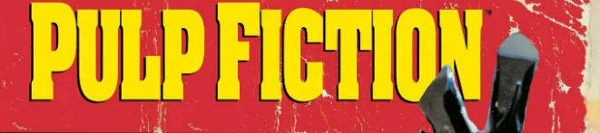

Pulp Fiction (conocida como Tiempos violentos en Hispanoamérica) es una película estadounidense de 1994 escrita y dirigida por Quentin Tarantino. El guion está basado en historias que el mismo Tarantino desarrolló en colaboración con Roger Avary durante los años 1992 y 1993, incluyendo escenas que originalmente habían sido escritas para True Romance.
A partir de una narrativa no lineal, la película entrelaza varias historias cuyos protagonistas son miembros del crimen organizado de Los Ángeles. Los diálogos estilizados, la mezcla de humor y violencia y su tono irónico distinguen a la película. Su nombre deriva de las revistas de literatura pulp y las novelas gráficas hard boiled, muy populares a mediados del siglo XX, conocidas por su violencia gráfica y su prosa dura. Es protagonizada por John Travolta, Uma Thurman, Samuel L. Jackson, Harvey Keitel, Bruce Willis y Tim Roth, entre otros. Es considerada una de las cintas más representativas de la obra del director estadounidense, siendo una de las obras que lo consagró como cineasta.